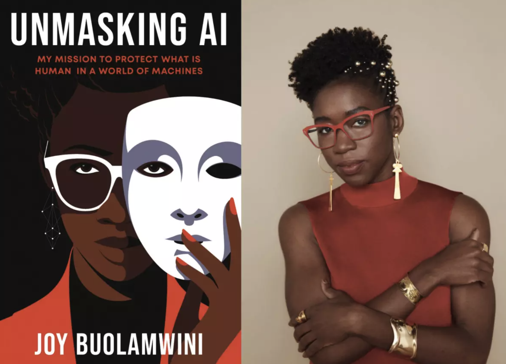
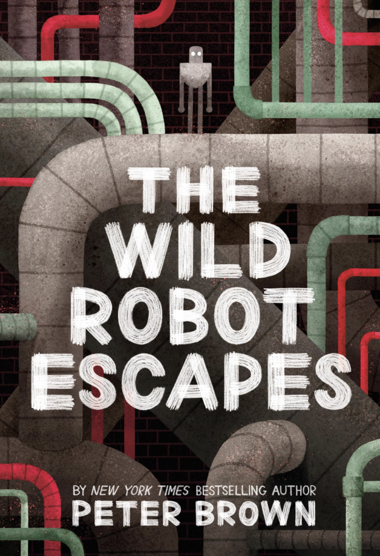

📚 Chapter 6: AI Book Recommendations#
 ---
---
1. “Unmasking AI: My Mission to Protect What Is Human in a World of Machines”#
Author: Dr. Joy Buolamwini
{kind=link}
“AI reflects both the aspirations and the limitations of its makers.” [Buolamwini, 2023]
1.1 Why This Book Matters#
This groundbreaking book by MIT researcher Dr. Joy Buolamwini exposes the hidden biases in AI systems and shows how technology can perpetuate discrimination. It’s essential reading for anyone who wants to understand the real-world impact of AI on society.
1.2 Key Questions the Book Explores#
🤔 Critical Questions:
Is AI objective or does it reflect human bias?
Who decides which data are filtered out, which data are kept in for training AI?
Whose values are being encoded in AI systems?
Whose perspectives are erased or ignored during AI development?
How can we make AI more fair and inclusive?
“The voice of everyday people with lived experiences of what it means to be excluded – indeed, excoded – from systems not designed with you in mind.” [Buolamwini, 2023]
1.3 The Concept of “Coded Gaze”#
“The coded gaze describes the ways in which the priorities, preferences, and prejudices of those who have the power to shape technology can propagate harm, such as discrimination and erasure. We can encode prejudice into technology even if it is not intentional.” [Buolamwini, 2023]
1.4 Real-World Example: AI Hiring Bias#
💼 The Amazon Case Study:
What happened? Amazon created an AI system to help them hire the best employees by automatically reviewing job applications. But there was a big problem - the AI was biased against women!
🤔 Why did this happen? The AI learned from Amazon’s past hiring data, which showed that most of their tech employees were men. So the AI thought “men = good employees” and started giving lower scores to any resume that mentioned women’s activities (like “women’s chess club captain”) or women’s colleges.
😠 Real consequences: This meant qualified women were getting rejected not because they weren’t good enough, but because the AI had learned unfair patterns from the past. Amazon had to stop using this system.
💭 The bigger problem: Many companies still use AI for hiring, and people often trust these systems more than human decisions, thinking they’re “fair and objective” when they’re not.
“We swap fallible human gatekeepers for machines that are also flawed but assumed to be objective. And when machines fail, the people who often have the least resources and most limited access to power structures are those who have to experience the worst outcomes.” [Buolamwini, 2023]
1.5 Key Takeaways#
“We need to recognize that not building a tool or not collecting intrusive data is an option, and that should be the first consideration.” [Buolamwini, 2023]
“Do we need this AI system or this data in the first place, or does it allow us to direct money at inadequate technical Band-Aids without addressing much larger systemic societal issues?” [Buolamwini, 2023]
“AI will not solve poverty, because the conditions that lead to societies that pursue profit over people are not technical.” [Buolamwini, 2023]
2. “The Wild Robot Escapes”#
Author: Peter Brown
{kind=link}
This is the sequal (volume 2) of the original book “The Wild Robot” which is now a movie too.

2.1 Why This Book Is Special#
This beautifully illustrated novel explores themes of artificial intelligence, consciousness, and what it means to be “alive” through the story of a robot who learns to survive in the wild. It’s perfect for readers of all ages who want to think about AI in a more emotional and philosophical way.

How is AI’s algorithms and programming different or similar to animals’ cognitive “algorithms” and “programming”?

2.2 Key Themes#
🤖 What Makes Us Human?
Can machines develop emotions and consciousness?
How do we define life and intelligence?
What happens when AI learns to care?

🌿 Nature & Technology
The author imagined the future of AI, the robot speaks the lanaguge of the animals, and is being used for dairy farming
“…the entire farm was equipped with technology that made life easier for everyone. Doors and gates opened automatically. The cows wore electronic collars that kept track of their health automatically. When a cow’s udders were full, she simply had to stroll into the parlor, where she’ll be milked by gentle machines automatically” [Brown, 2018]
The AI depiction is very futuristic, while the description of dairy farming is very historical (i.e., cows on pasture, with their calves)
“…sprawling, rolling pasture, lush with tall grass and a few leafy trees, where a herd of cows was grazing. The cows swished their tails and chewed their cud…” [Brown, 2018]
“Roz was more content than she had ever expected to be. Most of her time was spent outdoors, with animals, under the wide-open sky.” [Brown, 2018]
How should AI be programmed towards its treatment with animals?
“👨🏻🌾
Roz, you're a farmer now, and sometimes farmers have to kill animals!It was the first time Mr.Shareef had ever yelled at Roz…My farm and my family are in danger! Roz, I order you to kill those wolves!”
“🤖
I cannot follow that order because I am not programmed to be violent.” [Brown, 2018]